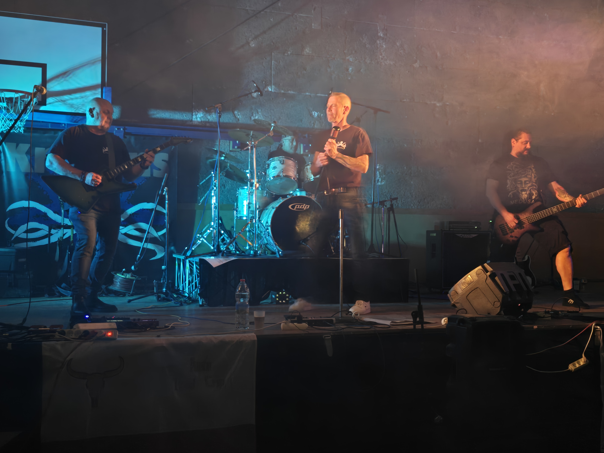

Fondés à Lyon en janvier 2019 par le chanteur Glyn, les Krakens naissent d'une conviction simple : le rock n'est pas mort, il attend juste d'être réveillé. Groupe de reprises à ses débuts, la formation explore dès l'origine un répertoire large — des classiques du hard rock et du metal des années 80-90 (Metallica, AC/DC, Iron Maiden, Van Halen, Alice Cooper) jusqu'aux titres plus accessibles de Cranberries, Gary Moore, Tina Turner ou Radiohead. Leur marque de fabrique ? S'emparer de morceaux pop-rock de l'époque — Simple Minds, Midnight Oil, Dire Straits — et les "métalliser" sans les trahir.
Le batteur Bob, pilier de la formation depuis les débuts, ancre le tout dans une rythmique implacable. En février 2022, l'arrivée de Phil, compositeur et soliste aguerri, marque le tournant décisif : les Krakens cessent d'être un groupe de reprises pour devenir un groupe de création. Le son se fait plus lourd, plus affirmé, résolument metal. En 2024, les Krakens franchissent une étape majeure avec la sortie de leur premier CD de compositions originales.
En septembre 2025, Ned, bassiste croate au parcours international exceptionnel, rejoint les Krakens. Forgé dans les scènes hardcore et death metal européennes, il apporte une puissance de jeu metal rarement atteinte. Sa basse — une Spector NS II 5 propulsée par un stack Ampeg et un Darkglass B7K — insuffle au groupe une profondeur nouvelle. Forts de 17 morceaux originaux, ils entrent en studio en mai 2026 pour enregistrer un nouvel EP.
Repères
Founded in Lyon in January 2019 by vocalist Glyn, Les Krakens were born from a simple conviction: rock isn't dead — it just needs waking up. Starting as a cover band, they quickly built a wide-ranging repertoire from 80s-90s hard rock and metal classics (Metallica, AC/DC, Iron Maiden, Van Halen, Alice Cooper) to more accessible tracks. Their signature move? Taking pop-rock songs and "metalizing" them without betraying their spirit.
Drummer Bob, a cornerstone since day one, kept it all locked in with relentless precision. In February 2022, the arrival of Phil, seasoned composer and lead guitarist, marked the decisive turning point: Les Krakens shifted from cover band to creative force. The sound grew heavier and unmistakably metal. In 2024, the band released their first original CD.
In September 2025, Ned, a Croatian bassist with an exceptional international background, joined Les Krakens. Forged in European hardcore and death metal scenes, his five-string Spector NS II, driven through an Ampeg stack and a Darkglass B7K, injects the band with new depth and ferocity. Armed with 17 original tracks, they entered the studio in May 2026 to record a new EP.
Timeline
🎵 Écouter / Listen
🎬 Vidéos / Videos
Live · Concert
Live · Concert
Live · Concert
Live · Concert